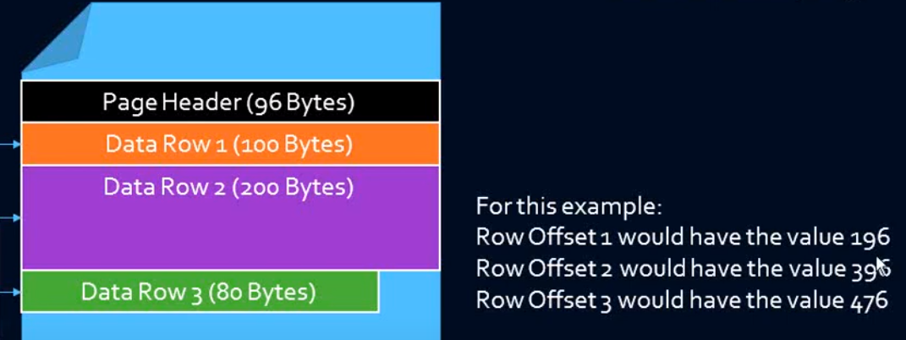
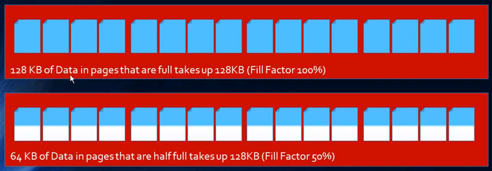
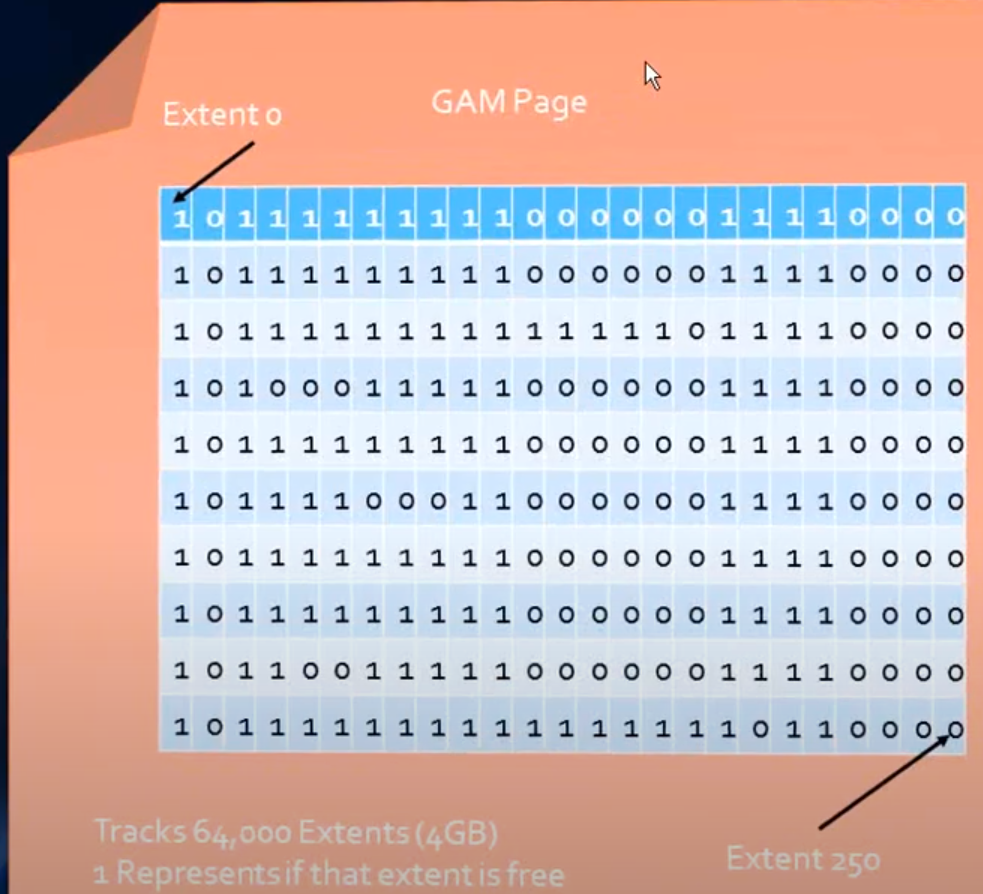
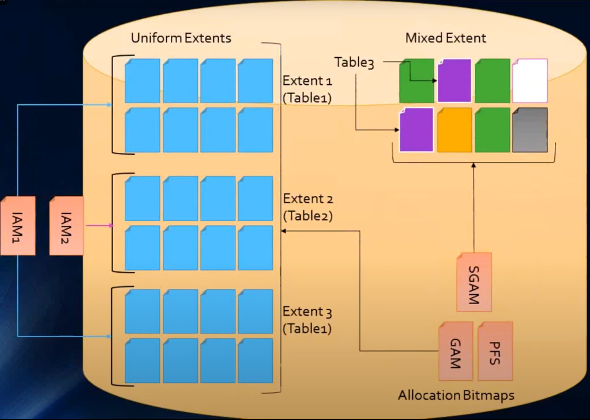

Page
- Data are stored as pages.
- Smallest unit of allocation (there is no half page).
- Size of each page is:
- System Info: Page Header (96 bytes) + Row Offset (36 bytes) = -132 bytes
- Pages Header contains PageID, Pointers to Previous and Next pages, Free Space, and Total # of rows on the page.
- Row Offset contains distance from the first byte in the row to the start of the page.
- Total Size for Row Storage: 8060 bytes
- Page header contains info like Previous and Next Page. Row Offset contains info like how far from the start of the page the record is.
- If we have a row with 4500 bytes of data then only single row will be stored in a page and rest space 3560 bytes are wasted. If we will restructure row size with 4000 bytes then we can store 2 rows on a page and will be able to reduce the waste spaces.
- Entire page is loaded into RAM (not just rows).
- 1 Page is equal to:
- 8192 bytes
- 8 KB
- 8 Pages is equal to:
- 64 KB
- 1 Extent
- 128 Pages is equal to:
- 1024 KB
- 16 Extents
- 1 MB


Extents
- A fundamental unit of data storage that consists of eight contiguous pages, which equals 64 KB (since each page is 8 KB).
- Basic unit of space management for SQL Server data and index pages.
- Are used to efficiently manage space allocation and to improve performance by grouping pages together.
- There are two types of extents:
- Uniform Extents - All eight pages in the extent are allocated to a single object, such as a table or an index. This type of extent is typically used for objects that are large enough to require more than one page.
- Mixed Extents - Pages in the extent can be allocated to different objects (up to 8). This type is generally used for smaller objects that do not require an entire extent. Mixed extents help reduce wasted space by allowing multiple smaller objects to share the same extent.
- First eight pages of a table is stored in mixed extent (ex: together with the first eight pages of other tables) while after eight pages, uniform extent (ex: same table) is provided.
- SQL Server uses a proportional fill algorithm, meaning it distributes data across all available extents proportionally. This helps balance the I/O load across the database files.
Page Splits
- Occurs when there is not enough space on an existing data page to accommodate a new row or update an existing row, typically due to an insert or update operation. This involves the normal I/O of inserting a row, but at the same time updating indexes as well hence it takes a lot of I/O. While certain amount of page splits is normal and expected, but too many page splits causes performance issue. When this happens, SQL Server has to split the data page into two to make room for the new data. Here’s how it works:
- Identify the Page to Split - SQL Server determines that the current page does not have enough free space to accommodate the new data.
- Allocate a New Page - SQL Server allocates a new page, often adjacent to the current page.
- Move Half the Rows - Approximately half of the rows from the full page are moved to the new page. This helps to create space for the new data on the original page.
- Update Pointers - The index pointers are updated to reflect the new structure of the pages, ensuring the data can still be accessed efficiently.
Implications of Page Splits
- Performance Overhead - Page splits can be resource-intensive as they involve moving data and updating index pointers. This can lead to increased CPU, memory, and I/O usage.
- Fragmentation - Page splits can cause fragmentation within the database, leading to inefficient use of storage and potential performance degradation over time. Fragmentation can be internal (within pages) or external (across the storage).
- Increased I/O - Because new pages need to be written to disk and index pointers updated, page splits increase the amount of I/O operations, which can slow down the system, especially under heavy load.
Minimizing Page Splits
- Fill Factor - Adjusting the fill factor for indexes can help reduce the frequency of page splits. The fill factor specifies the percentage of space on each page to be filled with data, leaving the rest as free space for future growth.
- Monitoring and Maintenance - Regularly monitor and maintain indexes using tools like
DBCC SHOWCONTIGorsys.dm_db_index_physical_statsto identify and address fragmentation. Rebuilding or reorganizing indexes can help mitigate the effects of page splits. - Optimized Data Insertion - Design applications and data insertion processes to minimize random inserts that can cause page splits. Consider batch inserts or using sequential keys for indexes.
- Row Compression - Implementing row or page compression can help reduce the size of rows, thus potentially reducing the need for page splits.
Allocation Bitmap Pages

- The internal "directory" of information on pages.
- GAM - which extents are available for allocation. It covers a 4GB interval of data.
- SGAM - which mixed extents have at least one page to allocate. It covers a 4GB interval of data.
- PFS - Used to track how much free space is on pages. Tracks other attributes as well. Covers a 64MB interval of data.
- IAM
- Special internal page on a data file that tracks all extent allocations for tables, indexes, and partitions.
- Lets SQL Server know what extent belongs to what specific entity.
- Covers a 4GB interval of data.
- In summary:
- It's all about cost reduction to the system.
- GAM, SGAM, and PFS basically help SQL Server determine where free space is and how much so that it can allocate it appropriately without having to scan all the pages.
- IAM pages and indexes help SQL Server fulfill queries.
- These few pages help keep an internal "directory" for SQL Server to be able to find what it needs quickly and pull back as few pages as necessary.
